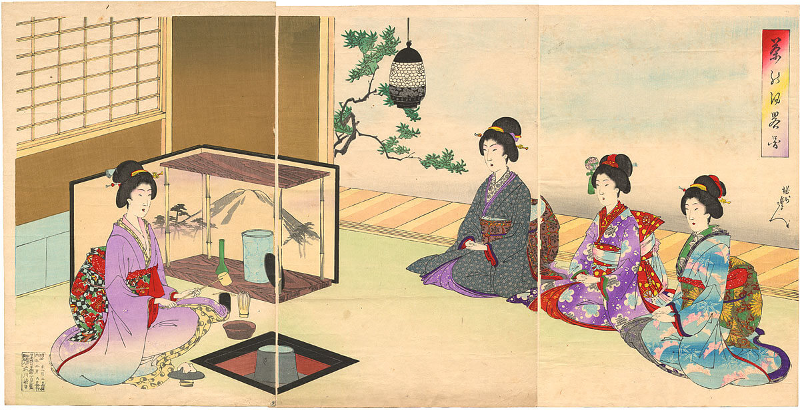

Ceremony
Ceremony

Japanese
Green Tea
Japanese Green Tea
The Japanese tea ceremony is an age-old tradition in Japan dating back to Buddhist monks in the 9th century. These ceremonies were of common practice, with counts of even the samurai participating in them. There are many aspects to a tea ceremony, but the center of attention is always Matcha.
A ceremony consists of a tea master and up to five guests. It is held in a special tea house. The tea master is responsible for the ambience in the tea house, as well as any necessary preparations for the ceremony. The tea house itself consists of a small doorway that one must bow or crouch down to get through, tatami mats, cushions, beautiful scrolls or flower arrangements, and an iron kettle which sits on a stove sunk into the floor. The host will then use a silk cloth, representing their spirit, to handle the iron kettle.
At this point, the main part of the ceremony begins with the preparation of Matcha. The tea master will take a Chawan and then add the Matcha and hot water. Taking the Chasen, the Matcha is whisked until the tea master deems it ready to be served.
When the first guest is handed the ceremonial Matcha, it is custom to turn the Chawan itself and admire the craftmanship before taking a drink. After a few sips, the bowl is wiped and then passed down the line with every guest following the example of the first. When the last guest has drank, the tea master serves small sweets to compliment the bitter taste of the tea. These sweets are usually wagashi sweets, made from a sweet bean paste. When the tea and sweets are finished, the bowl and tools are then cleaned by the tea master, concluding the ceremony.
